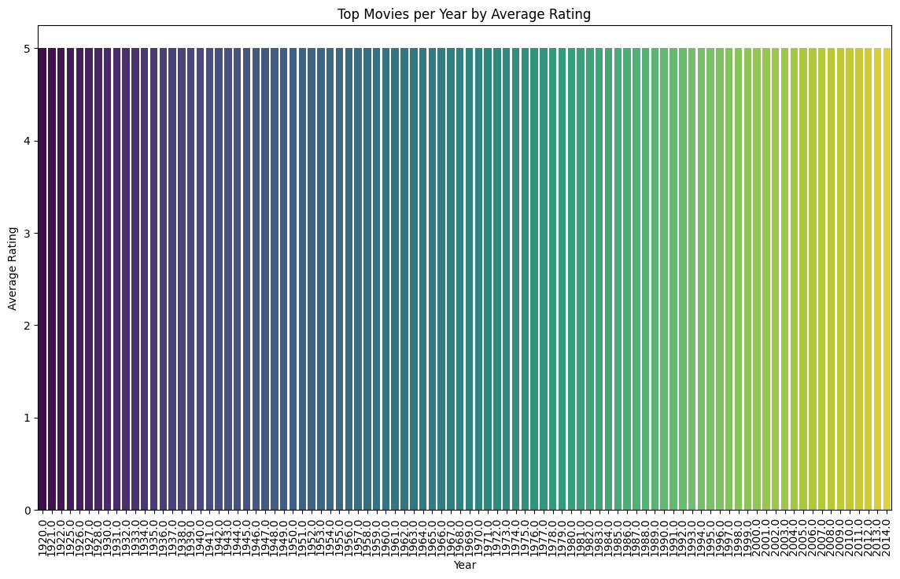

My Movie Recommendation System
Introduction
Movie Recommendation System
In the age of digital entertainment, finding the perfect movie can be overwhelming. Our innovative Movie Recommendation System simplifies this choice by harnessing the power of advanced algorithms and machine learning. Tailored to individual preferences and viewing history, our system intelligently suggests films that match your unique taste. Whether you are in the mood for a heartwarming drama, an action-packed thriller, or a side-splitting comedy, our recommendation engine ensures you spend less time searching and more time enjoying the cinematic experiences you love. Dive into a world of personalized movie suggestions and let us guide you to your next favorite film.
Abstract
Abstract
This project presents a sophisticated movie recommendation system leveraging a hybrid approach, combining both collaborative filtering and content-based filtering techniques. By integrating these methodologies, our system effectively addresses the limitations of individual approaches, enhancing the accuracy and relevance of recommendations. Collaborative filtering captures the collective preferences and viewing patterns of users, while content-based filtering analyzes the intrinsic attributes of movies such as genre, director, and cast. The synergy of these methods allows for personalized and precise movie suggestions, catering to the nuanced tastes of diverse audiences. Our hybrid recommendation system not only improves user satisfaction but also maximizes engagement by providing tailored cinematic experiences.
Table of Contents
Methodology
Methodology
In this project, we implemented a movie recommendation system using a hybrid approach that combines collaborative filtering and content-based filtering techniques.
Data Preparation
First, we merged the datasets containing movie ratings and movie details based on the movieId attribute. The combined data was then formatted to include only the necessary columns for the recommendation process. We used the Surprise library’s Reader and Dataset classes to load the data, and subsequently split it into training and testing sets to evaluate the model’s performance.
Collaborative Filtering
For collaborative filtering, we employed the Singular Value Decomposition (SVD) algorithm. A pre-trained SVD model was loaded and used to make predictions on the test set. The predictions were rounded to the nearest allowable rating value. We then aggregated the top N movie recommendations for each user by sorting the predicted ratings in descending order.
Content-Based Filtering
In the content-based filtering part, we utilized movie metadata, including genome tags, to create a feature matrix. We merged the genome scores with genome tags and pivoted the data to form a matrix of movies and their associated tag relevance scores. Each movie’s combined features were derived by concatenating its genres and relevant tags. These features were converted into TF-IDF vectors using a pre-trained TF-IDF vectorizer. To reduce the dimensionality of the feature vectors, we applied TruncatedSVD. Cosine similarity was then calculated between these reduced vectors to determine movie similarities.
Hybrid Recommendation System
The hybrid recommendation system integrates the outputs from both collaborative and content-based filtering methods. For a given user, collaborative filtering provides an initial list of recommended movies. If no collaborative recommendations are available for a new user, the system defaults to recommending popular movies based on average ratings and the number of ratings. The content-based filtering approach complements the collaborative filtering results by recommending movies similar to those the user has rated highly. The final list of recommendations combines scores from both methods to generate a ranked list of movies tailored to the user’s preferences.
import pandas as pd
import matplotlib.pyplot as plt
import seaborn as snsc:\source\Orion_Innovation_internship_repos\MovieLens-recommender\.venv\lib\site-packages\dask\dataframe\__init__.py:31: FutureWarning:
Dask dataframe query planning is disabled because dask-expr is not installed.
You can install it with `pip install dask[dataframe]` or `conda install dask`.
This will raise in a future version.
warnings.warn(msg, FutureWarning)movies=pd.read_csv('C:\source\Orion_Innovation_internship_repos\MovieLens-recommender\Dataset\movie.csv')
print(movies)
print(movies.head())
print(movies.tail()) movieId title \
0 1 Toy Story (1995)
1 2 Jumanji (1995)
2 3 Grumpier Old Men (1995)
3 4 Waiting to Exhale (1995)
4 5 Father of the Bride Part II (1995)
... ... ...
27273 131254 Kein Bund für's Leben (2007)
27274 131256 Feuer, Eis & Dosenbier (2002)
27275 131258 The Pirates (2014)
27276 131260 Rentun Ruusu (2001)
27277 131262 Innocence (2014)
genres
0 Adventure|Animation|Children|Comedy|Fantasy
1 Adventure|Children|Fantasy
2 Comedy|Romance
3 Comedy|Drama|Romance
4 Comedy
... ...
27273 Comedy
27274 Comedy
27275 Adventure
27276 (no genres listed)
27277 Adventure|Fantasy|Horror
[27278 rows x 3 columns]
movieId title \
0 1 Toy Story (1995)
1 2 Jumanji (1995)
2 3 Grumpier Old Men (1995)
3 4 Waiting to Exhale (1995)
4 5 Father of the Bride Part II (1995)
genres
0 Adventure|Animation|Children|Comedy|Fantasy
1 Adventure|Children|Fantasy
2 Comedy|Romance
3 Comedy|Drama|Romance
4 Comedy
movieId title genres
27273 131254 Kein Bund für's Leben (2007) Comedy
27274 131256 Feuer, Eis & Dosenbier (2002) Comedy
27275 131258 The Pirates (2014) Adventure
27276 131260 Rentun Ruusu (2001) (no genres listed)
27277 131262 Innocence (2014) Adventure|Fantasy|Horrorratings=pd.read_csv('C:/source/Orion_Innovation_internship_repos/MovieLens-recommender/Dataset/rating.csv')
print(ratings)
print(ratings.head())
print(ratings.tail()) userId movieId rating timestamp
0 1 2 3.5 02-04-2005 23:53
1 1 29 3.5 02-04-2005 23:31
2 1 32 3.5 02-04-2005 23:33
3 1 47 3.5 02-04-2005 23:32
4 1 50 3.5 02-04-2005 23:29
... ... ... ... ...
1048570 7120 168 5.0 02-04-2007 19:44
1048571 7120 253 4.0 02-04-2007 19:30
1048572 7120 260 5.0 02-04-2007 19:27
1048573 7120 261 4.0 02-04-2007 19:49
1048574 7120 266 3.5 02-04-2007 19:34
[1048575 rows x 4 columns]
userId movieId rating timestamp
0 1 2 3.5 02-04-2005 23:53
1 1 29 3.5 02-04-2005 23:31
2 1 32 3.5 02-04-2005 23:33
3 1 47 3.5 02-04-2005 23:32
4 1 50 3.5 02-04-2005 23:29
userId movieId rating timestamp
1048570 7120 168 5.0 02-04-2007 19:44
1048571 7120 253 4.0 02-04-2007 19:30
1048572 7120 260 5.0 02-04-2007 19:27
1048573 7120 261 4.0 02-04-2007 19:49
1048574 7120 266 3.5 02-04-2007 19:34tags=pd.read_csv('C:/source/Orion_Innovation_internship_repos/MovieLens-recommender/Dataset/tag.csv')
print(tags)
print(tags.head())
print(tags.tail()) userId movieId tag timestamp
0 18 4141 Mark Waters 24-04-2009 18:19
1 65 208 dark hero 10-05-2013 01:41
2 65 353 dark hero 10-05-2013 01:41
3 65 521 noir thriller 10-05-2013 01:39
4 65 592 dark hero 10-05-2013 01:41
... ... ... ... ...
465559 138446 55999 dragged 23-01-2013 23:29
465560 138446 55999 Jason Bateman 23-01-2013 23:29
465561 138446 55999 quirky 23-01-2013 23:29
465562 138446 55999 sad 23-01-2013 23:29
465563 138472 923 rise to power 02-11-2007 21:12
[465564 rows x 4 columns]
userId movieId tag timestamp
0 18 4141 Mark Waters 24-04-2009 18:19
1 65 208 dark hero 10-05-2013 01:41
2 65 353 dark hero 10-05-2013 01:41
3 65 521 noir thriller 10-05-2013 01:39
4 65 592 dark hero 10-05-2013 01:41
userId movieId tag timestamp
465559 138446 55999 dragged 23-01-2013 23:29
465560 138446 55999 Jason Bateman 23-01-2013 23:29
465561 138446 55999 quirky 23-01-2013 23:29
465562 138446 55999 sad 23-01-2013 23:29
465563 138472 923 rise to power 02-11-2007 21:12g_score=pd.read_csv('C:/source/Orion_Innovation_internship_repos/MovieLens-recommender/Dataset/genome_scores.csv')
print(g_score)
print(g_score.head())
print(g_score.tail()) movieId tagId relevance
0 1 1 0.02500
1 1 2 0.02500
2 1 3 0.05775
3 1 4 0.09675
4 1 5 0.14675
... ... ... ...
11709763 131170 1124 0.58775
11709764 131170 1125 0.01075
11709765 131170 1126 0.01575
11709766 131170 1127 0.11450
11709767 131170 1128 0.02175
[11709768 rows x 3 columns]
movieId tagId relevance
0 1 1 0.02500
1 1 2 0.02500
2 1 3 0.05775
3 1 4 0.09675
4 1 5 0.14675
movieId tagId relevance
11709763 131170 1124 0.58775
11709764 131170 1125 0.01075
11709765 131170 1126 0.01575
11709766 131170 1127 0.11450
11709767 131170 1128 0.02175g_tag=pd.read_csv('C:/source/Orion_Innovation_internship_repos/MovieLens-recommender/Dataset/genome_tags.csv')
print(g_tag)
print(g_tag.head())
print(g_tag.tail()) tagId tag
0 1 007
1 2 007 (series)
2 3 18th century
3 4 1920s
4 5 1930s
... ... ...
1123 1124 writing
1124 1125 wuxia
1125 1126 wwii
1126 1127 zombie
1127 1128 zombies
[1128 rows x 2 columns]
tagId tag
0 1 007
1 2 007 (series)
2 3 18th century
3 4 1920s
4 5 1930s
tagId tag
1123 1124 writing
1124 1125 wuxia
1125 1126 wwii
1126 1127 zombie
1127 1128 zombieslinks=pd.read_csv('C:/source/Orion_Innovation_internship_repos/MovieLens-recommender/Dataset/link.csv')
print(links) movieId imdbId tmdbId
0 1 114709 862.0
1 2 113497 8844.0
2 3 113228 15602.0
3 4 114885 31357.0
4 5 113041 11862.0
... ... ... ...
27273 131254 466713 4436.0
27274 131256 277703 9274.0
27275 131258 3485166 285213.0
27276 131260 249110 32099.0
27277 131262 1724965 286971.0
[27278 rows x 3 columns]print(movies.isnull().sum())movieId 0
title 0
genres 0
dtype: int64print(ratings.isnull().sum())userId 0
movieId 0
rating 0
timestamp 0
dtype: int64print(links.describe()) movieId imdbId tmdbId
count 27278.000000 2.727800e+04 27026.000000
mean 59855.480570 5.781860e+05 63846.683083
std 44429.314697 7.804707e+05 69862.134497
min 1.000000 5.000000e+00 2.000000
25% 6931.250000 7.741725e+04 15936.500000
50% 68068.000000 1.524350e+05 39468.500000
75% 100293.250000 9.062715e+05 82504.000000
max 131262.000000 4.530184e+06 421510.000000print(g_score.describe()) movieId tagId relevance
count 1.170977e+07 1.170977e+07 1.170977e+07
mean 2.584297e+04 5.645000e+02 1.164833e-01
std 3.467615e+04 3.256254e+02 1.542463e-01
min 1.000000e+00 1.000000e+00 2.500000e-04
25% 2.926000e+03 2.827500e+02 2.425000e-02
50% 6.017000e+03 5.645000e+02 5.650000e-02
75% 4.606200e+04 8.462500e+02 1.415000e-01
max 1.311700e+05 1.128000e+03 1.000000e+00print(g_tag.describe()) tagId
count 1128.000000
mean 564.500000
std 325.769857
min 1.000000
25% 282.750000
50% 564.500000
75% 846.250000
max 1128.000000print(tags.describe()) userId movieId
count 465564.000000 465564.000000
mean 68712.354263 32627.762920
std 41877.674053 36080.241157
min 18.000000 1.000000
25% 28780.000000 2571.000000
50% 70201.000000 7373.000000
75% 107322.000000 62235.000000
max 138472.000000 131258.000000genres_split = movies['genres'].str.split('|')
unique_genres = set(genre for sublist in genres_split for genre in sublist)
print("Unique genres:", unique_genres)Unique genres: {'Romance', 'Drama', 'Adventure', '(no genres listed)', 'IMAX', 'Musical', 'Fantasy', 'War', 'Horror', 'Comedy', 'Crime', 'Documentary', 'Action', 'Children', 'Thriller', 'Film-Noir', 'Sci-Fi', 'Animation', 'Western', 'Mystery'}# Distribution of ratings
plt.figure(figsize=(10, 6))
sns.histplot(ratings['rating'], bins=10, kde=False)
plt.title('Distribution of Movie Ratings')
plt.xlabel('Rating')
plt.ylabel('Frequency')
plt.show()
The graph shows that most users rate movies highly, with ratings of 4 being the most frequent, indicating generally positive feedback. Lower ratings (1 and 2) are much less common, suggesting fewer movies are perceived very negatively.
# Distribution of ratings with kde true
plt.figure(figsize=(10, 6))
sns.histplot(ratings['rating'], bins=10, kde=True)
plt.title('Distribution of Movie Ratings')
plt.xlabel('Rating')
plt.ylabel('Frequency')
plt.show()# Number of ratings per movie
ratings_per_movie = ratings.groupby('movieId').size()
plt.figure(figsize=(10, 6))
sns.histplot(ratings_per_movie, bins=25, kde=True)
plt.title('Number of Ratings per Movie')
plt.xlabel('Number of Ratings')
plt.ylabel('Frequency')
plt.show()The histogram highlights the imbalance in the number of ratings across movies, with a small number of highly rated movies and a large number of movies with very few ratings.
# overall average rating
average_rating = ratings['rating'].mean()
print(f'Overall Average Rating: {average_rating:.2f}')
# average rating per movie
average_rating_per_movie = ratings.groupby('movieId')['rating'].mean().reset_index()
print(average_rating_per_movie.head())
# average rating per user
average_rating_per_user = ratings.groupby('userId')['rating'].mean().reset_index()
print(average_rating_per_user.head())Overall Average Rating: 3.53
movieId rating
0 1 3.959323
1 2 3.268398
2 3 3.186861
3 4 3.000000
4 5 3.143836
userId rating
0 1 3.742857
1 2 4.000000
2 3 4.122995
3 4 3.571429
4 5 4.272727# Top 10 most rated movies
ratings_movies = pd.merge(ratings, movies, on='movieId')
most_rated_movies = ratings_movies['title'].value_counts().head(10)
plt.figure(figsize=(12, 6))
sns.barplot(x=most_rated_movies.values, y=most_rated_movies.index, palette='viridis')
plt.title('Top 10 Most Rated Movies')
plt.xlabel('Number of Ratings')
plt.ylabel('Movie Title')
plt.show()C:\Users\ivars\AppData\Local\Temp\ipykernel_19660\3410967599.py:5: FutureWarning:
Passing `palette` without assigning `hue` is deprecated and will be removed in v0.14.0. Assign the `y` variable to `hue` and set `legend=False` for the same effect.
sns.barplot(x=most_rated_movies.values, y=most_rated_movies.index, palette='viridis')The diversity in genres implies that the user base has varied interests, not favoring a single genre
# Split genres into separate rows
movies_genres = movies[['movieId', 'title', 'genres']].copy()
movies_genres = movies_genres.drop(movies_genres[movies_genres['genres'] == '(no genres listed)'].index)
movies_genres['genres'] = movies_genres['genres'].str.split('|')
movies_genres = movies_genres.explode('genres')
# Merge with ratings
ratings_genres = pd.merge(ratings, movies_genres, on='movieId')
# Average rating by genre
average_ratings_by_genre = ratings_genres.groupby('genres')['rating'].mean().sort_values(ascending=False)
plt.figure(figsize=(12, 6))
sns.barplot(x=average_ratings_by_genre.values, y=average_ratings_by_genre.index, palette='viridis')
plt.title('Average Rating by Genre')
plt.xlabel('Average Rating')
plt.ylabel('Genre')
plt.show()C:\Users\ivars\AppData\Local\Temp\ipykernel_19660\281678378.py:14: FutureWarning:
Passing `palette` without assigning `hue` is deprecated and will be removed in v0.14.0. Assign the `y` variable to `hue` and set `legend=False` for the same effect.
sns.barplot(x=average_ratings_by_genre.values, y=average_ratings_by_genre.index, palette='viridis')import matplotlib.pyplot as plt
# Calculate average rating per movie
average_ratings = ratings.groupby('movieId')['rating'].mean()
# Calculate the number of ratings per movie
ratings_count = ratings.groupby('movieId').size()
plt.figure(figsize=(12, 8))
plt.scatter(ratings_count, average_ratings, alpha=0.5)
plt.xlabel('Number of Ratings')
plt.ylabel('Average Rating')
plt.title('Number of Ratings vs. Average Rating')
plt.show()plt.figure(figsize=(12, 8))
plt.scatter(ratings_count.index, ratings_count, alpha=0.5)
plt.xlabel('Movie ID')
plt.ylabel('Number of Ratings')
plt.title('Number of Ratings per Movie')
plt.show()This plot helps to see the distribution of the number of ratings per movie directly and identify outliers easily.
import pandas as pd
# Get the unique movie IDs from the ratings dataset
rated_movie_ids = ratings['movieId'].unique()
# Find movie IDs that are not in the rated_movie_ids
unrated_movies = movies[~movies['movieId'].isin(rated_movie_ids)]
# Display the unrated movies
print(unrated_movies)
unrated_movies_count = unrated_movies.shape[0]
# Display the count of unrated movies
print(f'The number of unrated movies is: {unrated_movies_count}') movieId title \
96 98 Shopping (1994)
113 115 Happiness Is in the Field (Bonheur est dans le...
141 143 Gospa (1995)
391 395 Desert Winds (1995)
397 401 Mirage (1995)
... ... ...
27273 131254 Kein Bund für's Leben (2007)
27274 131256 Feuer, Eis & Dosenbier (2002)
27275 131258 The Pirates (2014)
27276 131260 Rentun Ruusu (2001)
27277 131262 Innocence (2014)
genres
96 Action|Thriller
113 Comedy
141 Drama
391 Drama|Fantasy|Romance
397 Action|Thriller
... ...
27273 Comedy
27274 Comedy
27275 Adventure
27276 (no genres listed)
27277 Adventure|Fantasy|Horror
[13252 rows x 3 columns]
The number of unrated movies is: 13252unrated_movies.to_csv('unrated_movies.csv', index=False)The CSV file unrated_movies.csv will contain the list of movies from the movies.csv file that do not have any corresponding ratings in the ratings.csv file.
from sklearn.preprocessing import MultiLabelBinarizer
# Split the genres string into a list of genres
movies['genres'] = movies['genres'].apply(lambda x: x.split('|'))
# Use MultiLabelBinarizer to one-hot encode the genres
mlb = MultiLabelBinarizer()
genres_encoded = mlb.fit_transform(movies['genres'])
genres_df = pd.DataFrame(genres_encoded, columns=mlb.classes_)
# Merge the one-hot encoded genres with the original movies dataframe
movies = movies.join(genres_df)
# Drop the original 'genres' column as it's no longer needed
movies.drop('genres', axis=1, inplace=True)
print(movies.head()) movieId title (no genres listed) Action \
0 1 Toy Story (1995) 0 0
1 2 Jumanji (1995) 0 0
2 3 Grumpier Old Men (1995) 0 0
3 4 Waiting to Exhale (1995) 0 0
4 5 Father of the Bride Part II (1995) 0 0
Adventure Animation Children Comedy Crime Documentary ... Film-Noir \
0 1 1 1 1 0 0 ... 0
1 1 0 1 0 0 0 ... 0
2 0 0 0 1 0 0 ... 0
3 0 0 0 1 0 0 ... 0
4 0 0 0 1 0 0 ... 0
Horror IMAX Musical Mystery Romance Sci-Fi Thriller War Western
0 0 0 0 0 0 0 0 0 0
1 0 0 0 0 0 0 0 0 0
2 0 0 0 0 1 0 0 0 0
3 0 0 0 0 1 0 0 0 0
4 0 0 0 0 0 0 0 0 0
[5 rows x 22 columns]from sklearn.metrics.pairwise import cosine_similarity
# Compute cosine similarity matrix for the one-hot encoded genres
cosine_sim_matrix = cosine_similarity(genres_df)
print(cosine_sim_matrix.shape)(27278, 27278)# Select a fixed number of movies (e.g., 20)
subset_size = 20
subset_movies = movies.sample(subset_size, random_state=42)
# Get the indices of the subset
subset_indices = subset_movies.index
# Get the corresponding genres for the subset
subset_genres_df = genres_df.iloc[subset_indices]# Compute cosine similarity matrix for the subset
subset_cosine_sim_matrix = cosine_similarity(subset_genres_df)
# Convert to a DataFrame for better handling
subset_cosine_sim_df = pd.DataFrame(subset_cosine_sim_matrix, index=subset_movies['title'], columns=subset_movies['title'])# Plot the heatmap for the subset
plt.figure(figsize=(12, 10))
sns.heatmap(subset_cosine_sim_df, cmap='coolwarm', annot=True, fmt=".2f")
plt.title('Cosine Similarity Matrix of Selected Movies Based on Genres')
plt.xticks(rotation=90)
plt.yticks(rotation=0)
plt.show()from sklearn.feature_extraction.text import TfidfVectorizer
tfidf = TfidfVectorizer(stop_words='english')
movies['title'] = movies['title'].fillna('')
tfidf_matrix = tfidf.fit_transform(movies['title'])
print(tfidf_matrix) (0, 19545) 0.7450014446806167
(0, 18333) 0.49928609739142044
(0, 156) 0.44236437512014776
(1, 156) 0.4327735155916253
(1, 9966) 0.9015026811953836
(2, 156) 0.33351161626915604
(2, 8029) 0.6947320144242862
(2, 13781) 0.48350887527744
(2, 12253) 0.41513443301592495
(3, 156) 0.3523387525432559
(3, 20740) 0.5806669392217108
(3, 6331) 0.73395048140263
(4, 156) 0.3843990627624906
(4, 6553) 0.5654748070463544
(4, 2663) 0.5708495257469082
(4, 9172) 0.45453979154496144
(5, 156) 0.5235890685768715
(5, 8515) 0.851970942736197
(6, 156) 0.44671308996168857
(6, 16465) 0.8946772687717512
(7, 156) 0.3659037591579004
(7, 19418) 0.5736473450078663
(7, 8960) 0.7328322881802789
(8, 156) 0.40895644947304455
(8, 18475) 0.7629323610776246
: :
(27270, 173) 0.3633973340564821
(27271, 16811) 0.8423853845662482
(27271, 167) 0.5388755550859347
(27272, 5620) 0.4677782188938281
(27272, 4812) 0.2887506421782067
(27272, 168) 0.22650585687812594
(27272, 9836) 0.40486459085940996
(27272, 10473) 0.48147146113336603
(27272, 7017) 0.5007710021081905
(27273, 7301) 0.47268125603508504
(27273, 11037) 0.44519155176448366
(27273, 174) 0.22476641536118216
(27273, 10248) 0.48984189115500054
(27273, 2867) 0.5365742191216446
(27274, 169) 0.249414048761211
(27274, 6682) 0.559104233657297
(27274, 5903) 0.559104233657297
(27274, 5503) 0.559104233657297
(27275, 14714) 0.874972496746573
(27275, 181) 0.4841726241094888
(27276, 168) 0.3046327051405594
(27276, 15890) 0.6734979268560316
(27276, 16404) 0.6734979268560316
(27277, 9373) 0.8844300176159253
(27277, 181) 0.46667284465661163Row Index: The index of the document (movie title) in the dataset. Column Index: The index of the term in the vocabulary. TF-IDF Score: The calculated TF-IDF score for that term in that document. To identify important keywords To analyze genres and themes movie similarities
# Calculate the IQR
Q1 = ratings['rating'].quantile(0.25)
Q3 = ratings['rating'].quantile(0.75)
IQR = Q3 - Q1
# Define the lower and upper bounds for outliers
lower_bound = Q1 - 1.5 * IQR
upper_bound = Q3 + 1.5 * IQR
# Identify outliers
outliers = ratings[(ratings['rating'] < lower_bound) | (ratings['rating'] > upper_bound)]
print(outliers) userId movieId rating timestamp
380 3 2541 1.0 11-12-1999 07:30
390 3 2643 1.0 14-12-1999 12:54
394 3 2676 1.0 11-12-1999 07:30
426 4 32 1.0 24-08-1996 09:31
540 6 1073 1.0 13-03-1997 17:52
... ... ... ... ...
1048266 7116 32587 0.5 05-02-2006 22:17
1048281 7117 9 1.0 13-08-1998 14:21
1048355 7117 590 1.0 14-08-1998 12:18
1048394 7117 1206 1.0 14-08-1998 16:33
1048567 7120 153 0.5 02-04-2007 19:28
[48376 rows x 4 columns]The bounds for identifying outliers as any rating that is 1.5 times the IQR below the first quartile or above the third quartile.
import matplotlib.pyplot as plt
import seaborn as sns
# Create a histogram to visualize the distribution of ratings
plt.figure(figsize=(10, 6))
sns.histplot(ratings['rating'], bins=10, kde=True)
plt.title('Histogram of Movie Ratings')
plt.xlabel('Rating')
plt.ylabel('Frequency')
plt.show()
# Create a scatter plot to see the distribution of ratings by userId
plt.figure(figsize=(14, 7))
plt.scatter(ratings['userId'], ratings['rating'], alpha=0.5, label='Ratings')
plt.scatter(outliers['userId'], outliers['rating'], color='red', label='outliers')
plt.title('Scatter Plot of Ratings by UserId')
plt.xlabel('UserId')
plt.ylabel('Rating')
plt.legend()
plt.show()c:\source\Orion_Innovation_internship_repos\MovieLens-recommender\.venv\lib\site-packages\IPython\core\pylabtools.py:152: UserWarning: Creating legend with loc="best" can be slow with large amounts of data.
fig.canvas.print_figure(bytes_io, **kw)
# Create a box plot
plt.figure(figsize=(10, 6))
sns.boxplot(x=ratings['rating'])
plt.title('Box Plot of Movie Ratings')
plt.xlabel('Rating')
plt.show()This indicates that half of the ratings are below 3.5 and half are above There are two outliers on the lower end, with ratings of 1
# Merge genome scores and tags
genome_data = pd.merge(g_score, g_tag, on='tagId')
print(genome_data) movieId tagId relevance tag
0 1 1 0.02500 007
1 1 2 0.02500 007 (series)
2 1 3 0.05775 18th century
3 1 4 0.09675 1920s
4 1 5 0.14675 1930s
... ... ... ... ...
11709763 131170 1124 0.58775 writing
11709764 131170 1125 0.01075 wuxia
11709765 131170 1126 0.01575 wwii
11709766 131170 1127 0.11450 zombie
11709767 131170 1128 0.02175 zombies
[11709768 rows x 4 columns]import dask.dataframe as ddc:\source\Orion_Innovation_internship_repos\MovieLens-recommender\.venv\lib\site-packages\dask\dataframe\__init__.py:31: FutureWarning:
Dask dataframe query planning is disabled because dask-expr is not installed.
You can install it with `pip install dask[dataframe]` or `conda install dask`.
This will raise in a future version.
warnings.warn(msg, FutureWarning)data = dd.merge(data, genome_data, on='movieId')if 'genres' in movies.columns:
# Split the genres string into multiple columns
genres_split = movies['genres'].str.split('|', n=n, expand=True)
# Generate dummy variables for each genre
genres_dummies = pd.get_dummies(genres_split, prefix='', prefix_sep='')
# Sum the dummy variables to get the total count for each genre
genre_counts = genres_dummies.sum().sort_values(ascending=False)
# Plot the distribution of genres
genre_counts.plot(kind='bar', figsize=(12, 6))
plt.title('Distribution of Movie Genres')
plt.xlabel('Genre')
plt.ylabel('Frequency')
plt.show()
else:
print("The 'genres' column is not present in the movies dataset.")---------------------------------------------------------------------------
NotImplementedError Traceback (most recent call last)
Cell In[37], line 3
1 if 'genres' in movies.columns:
2 # Split the genres string into multiple columns
----> 3 genres_split = movies['genres'].str.split('|', n=-1, expand=True)
5 # Generate dummy variables for each genre
6 genres_dummies = pd.get_dummies(genres_split, prefix='', prefix_sep='')
File c:\source\Orion_Innovation_internship_repos\MovieLens-recommender\.venv\lib\site-packages\dask\dataframe\accessor.py:301, in StringAccessor.split(self, pat, n, expand)
295 @derived_from(
296 pd.Series.str,
297 inconsistencies="``expand=True`` with unknown ``n`` will raise a ``NotImplementedError``",
298 )
299 def split(self, pat=None, n=-1, expand=False):
300 """Known inconsistencies: ``expand=True`` with unknown ``n`` will raise a ``NotImplementedError``."""
--> 301 return self._split("split", pat=pat, n=n, expand=expand)
File c:\source\Orion_Innovation_internship_repos\MovieLens-recommender\.venv\lib\site-packages\dask\dataframe\accessor.py:279, in StringAccessor._split(self, method, pat, n, expand)
277 if expand:
278 if n == -1:
--> 279 raise NotImplementedError(
280 "To use the expand parameter you must specify the number of "
281 "expected splits with the n= parameter. Usually n splits "
282 "result in n+1 output columns."
283 )
284 else:
285 delimiter = " " if pat is None else pat
NotImplementedError: To use the expand parameter you must specify the number of expected splits with the n= parameter. Usually n splits result in n+1 output columns.genres = data['genres'].str.get_dummies(sep='|').sum().sort_values(ascending=False)
genres.plot(kind='bar', figsize=(12, 6))
plt.title('Distribution of Movie Genres')
plt.xlabel('Genre')
plt.ylabel('Frequency')
plt.show()---------------------------------------------------------------------------
AttributeError Traceback (most recent call last)
Cell In[43], line 1
----> 1 genres = data['genres'].str.get_dummies(sep='|').sum().sort_values(ascending=False)
2 genres.plot(kind='bar', figsize=(12, 6))
3 plt.title('Distribution of Movie Genres')
AttributeError: 'StringAccessor' object has no attribute 'get_dummies'
# Ratings distribution
plt.hist(data['rating'], bins=10)
plt.xlabel('Rating')
plt.ylabel('Frequency')
plt.title('Ratings Distribution')
plt.show()ratings_per_user = ratings.groupby('userId')['rating'].count()
plt.figure(figsize=(12, 6))
sns.histplot(ratings_per_user, bins=30, kde=True, palette='viridis')
plt.title('Number of Ratings per User')
plt.xlabel('Number of Ratings')
plt.ylabel('Number of Users')
plt.show()C:\Users\ivars\AppData\Local\Temp\ipykernel_19660\4093904407.py:4: UserWarning: Ignoring `palette` because no `hue` variable has been assigned.
sns.histplot(ratings_per_user, bins=30, kde=True, palette='viridis')import matplotlib.pyplot as plt
import seaborn as sns
ratings_per_user = ratings.groupby('userId')['rating'].count()
plt.figure(figsize=(12, 6))
sns.histplot(ratings_per_user, bins=30, kde=True, log_scale=(False, True), palette='viridis')
plt.title('Number of Ratings per User (Logarithmic Scale)')
plt.xlabel('Number of Ratings')
plt.ylabel('Number of Users')
plt.show()C:\Users\ivars\AppData\Local\Temp\ipykernel_19660\200590994.py:7: UserWarning: Ignoring `palette` because no `hue` variable has been assigned.
sns.histplot(ratings_per_user, bins=30, kde=True, log_scale=(False, True), palette='viridis')import numpy as np
# Compute the cumulative distribution
cdf = np.cumsum(ratings_per_user.value_counts().sort_index())
cdf = cdf / cdf.iloc[-1] # Normalize to 1
plt.figure(figsize=(12, 6))
plt.plot(cdf.index, cdf, marker='o', linestyle='-', color='b')
plt.title('Cumulative Distribution of Ratings per User')
plt.xlabel('Number of Ratings')
plt.ylabel('Cumulative Proportion of Users')
plt.grid(True)
plt.show()# Filter out users with an extremely high number of ratings
filtered_ratings_per_user = ratings_per_user[ratings_per_user < 500]
plt.figure(figsize=(12, 6))
sns.histplot(filtered_ratings_per_user, bins=30, kde=True, palette='viridis')
plt.title('Number of Ratings per User (Filtered Outliers)')
plt.xlabel('Number of Ratings')
plt.ylabel('Number of Users')
plt.show()C:\Users\ivars\AppData\Local\Temp\ipykernel_19660\2081119808.py:5: UserWarning: Ignoring `palette` because no `hue` variable has been assigned.
sns.histplot(filtered_ratings_per_user, bins=30, kde=True, palette='viridis')data = pd.merge(ratings, movies, on='movieId')# Calculate average rating and number of ratings for each movie
movie_stats = data.groupby('title').agg({'rating': ['mean', 'count']})
movie_stats.columns = ['average_rating', 'rating_count']
movie_stats = movie_stats.reset_index()
# Display the first few rows of the movie_stats
print(movie_stats.head()) title average_rating \
0 Jumanji (1995) 3.268398
1 City of Lost Children, The (Cité des enfants p... 4.004464
2 Twelve Monkeys (a.k.a. 12 Monkeys) (1995) 3.904628
3 Seven (a.k.a. Se7en) (1995) 4.078090
4 Usual Suspects, The (1995) 4.370482
rating_count
0 1155
1 448
2 2312
3 2241
4 2490 # Bar chart of top 10 movies by the number of ratings
top_10_movies = movie_stats.sort_values(by='rating_count', ascending=False).head(10)
plt.figure(figsize=(10, 6))
sns.barplot(x='rating_count', y='title', data=top_10_movies, palette='viridis')
plt.title('Top 10 Movies by Number of Ratings')
plt.xlabel('Number of Ratings')
plt.ylabel('Movie Title')
plt.show()C:\Users\ivars\AppData\Local\Temp\ipykernel_7012\1549310786.py:5: FutureWarning:
Passing `palette` without assigning `hue` is deprecated and will be removed in v0.14.0. Assign the `y` variable to `hue` and set `legend=False` for the same effect.
sns.barplot(x='rating_count', y='title', data=top_10_movies, palette='viridis')# Check the format of the timestamp column
print(ratings['timestamp'].head())
# Specify the correct format
ratings['timestamp'] = pd.to_datetime(ratings['timestamp'], format='%d-%m-%Y %H:%M')
# Extract year from the title
movies['year'] = movies['title'].str.extract(r'\((\d{4})\)', expand=False)
movies['year'] = pd.to_numeric(movies['year'], errors='coerce')0 02-04-2005 23:53
1 02-04-2005 23:31
2 02-04-2005 23:33
3 02-04-2005 23:32
4 02-04-2005 23:29
Name: timestamp, dtype: object# Calculate average rating per movie
movie_ratings = data.groupby('movieId').agg({'rating': 'mean', 'title': 'first', 'year': 'first'}).reset_index()
# Filter out movies with less than a certain number of ratings (optional)
min_ratings = 50 # for example
movie_ratings = data.groupby('movieId').filter(lambda x: len(x) >= min_ratings)
# Find top movie per year
top_movies_per_year = movie_ratings.loc[movie_ratings.groupby('year')['rating'].idxmax()]
# Plotting
plt.figure(figsize=(14, 8))
sns.barplot(data=top_movies_per_year, x='year', y='rating', palette='viridis')
plt.xticks(rotation=90)
plt.title('Top Movies per Year by Average Rating')
plt.xlabel('Year')
plt.ylabel('Average Rating')
plt.show()C:\Users\ivars\AppData\Local\Temp\ipykernel_5908\3005387069.py:13: FutureWarning:
Passing `palette` without assigning `hue` is deprecated and will be removed in v0.14.0. Assign the `x` variable to `hue` and set `legend=False` for the same effect.
sns.barplot(data=top_movies_per_year, x='year', y='rating', palette='viridis')
# Convert timestamp to datetime
ratings['timestamp'] = pd.to_datetime(ratings['timestamp'], unit='s')
# Extract year from the title
movies['year'] = movies['title'].str.extract(r'\((\d{4})\)', expand=False)
movies['year'] = pd.to_numeric(movies['year'], errors='coerce')
# Merge datasets
data = pd.merge(ratings, movies, on='movieId')
# Calculate average rating per movie
movie_ratings = data.groupby(['year', 'movieId', 'title']).agg({'rating': 'mean'}).reset_index()
# Find top ten movies per year
top_ten_movies_per_year = movie_ratings.groupby('year').apply(lambda x: x.nlargest(10, 'rating'))C:\Users\ivars\AppData\Local\Temp\ipykernel_5908\116517602.py:15: DeprecationWarning: DataFrameGroupBy.apply operated on the grouping columns. This behavior is deprecated, and in a future version of pandas the grouping columns will be excluded from the operation. Either pass `include_groups=False` to exclude the groupings or explicitly select the grouping columns after groupby to silence this warning.
top_ten_movies_per_year = movie_ratings.groupby('year').apply(lambda x: x.nlargest(10, 'rating'))# Plotting
plt.figure(figsize=(14, 8))
sns.boxplot(data=top_ten_movies_per_year, x='year', y='rating', palette='viridis')
plt.xticks(rotation=90)
plt.title('Top Ten Movies per Year by Rating')
plt.xlabel('Year')
plt.ylabel('Rating')
plt.show()C:\Users\ivars\AppData\Local\Temp\ipykernel_5908\4220577195.py:3: FutureWarning:
Passing `palette` without assigning `hue` is deprecated and will be removed in v0.14.0. Assign the `x` variable to `hue` and set `legend=False` for the same effect.
sns.boxplot(data=top_ten_movies_per_year, x='year', y='rating', palette='viridis')
# Extract year from title in movies_df
movies['year'] = movies['title'].str.extract(r'\((\d{4})\)').astype(float)
# Merge ratings with movies on movieId
merged_df = pd.merge(ratings, movies[['movieId', 'year']], on='movieId')
# Calculate average rating per year
avg_ratings_per_year = merged_df.groupby('year')['rating'].mean().reset_index()
# Plot the data
plt.figure(figsize=(14, 8))
plt.bar(avg_ratings_per_year['year'], avg_ratings_per_year['rating'], color='blue')
plt.xlabel('Year')
plt.ylabel('Average Rating')
plt.title('Top Movies per Year by Average Rating')
plt.xticks(rotation=90)
plt.show()The average ratings before the 1920s, with some years having average ratings close to 5 and others not much rated. From 1920s onwards, the average ratings remain relatively high, mostly between 3 and 4.5. There appears to be a slight decreasing in average ratings for movies from the 2000 to the 2010
# Convert timestamp to datetime using the correct format
ratings['timestamp'] = pd.to_datetime(ratings['timestamp'], format='%d-%m-%Y %H:%M')
ratings['rating_year'] = ratings['timestamp'].dt.year# Extract the release year from the title column for each movie
data['release_year'] = data['title'].str.extract(r'\((\d{4})\)').astype(float)
# Calculate average rating and number of ratings per movie
movie_stats = data.groupby(['title', 'release_year']).agg({'rating': ['mean', 'count']})
movie_stats.columns = ['average_rating', 'rating_count']
# Filter movies with at least 50 ratings to ensure relevance
popular_movies = movie_stats[movie_stats['rating_count'] >= 50]
# Get top 10 movies by average rating
top_movies = popular_movies.sort_values(by='average_rating', ascending=False).head(10).reset_index()
# Set the figure size and style
plt.figure(figsize=(12, 8))
sns.set_style("whitegrid")
# Plotting
plt.figure(figsize=(14, 8))
sns.barplot(x='average_rating', y='title', data=top_movies, palette='viridis')
# Add the average rating as text on the bars
for index, value in enumerate(top_movies['average_rating']):
plt.text(value, index, f'{value:.2f}', color='black', ha="left")
plt.xlabel('Average Rating')
plt.ylabel('Movie Title')
plt.title('Top 10 Movies by Average Rating')
plt.show()C:\Users\ivars\AppData\Local\Temp\ipykernel_10568\214488409.py:19: FutureWarning:
Passing `palette` without assigning `hue` is deprecated and will be removed in v0.14.0. Assign the `y` variable to `hue` and set `legend=False` for the same effect.
sns.barplot(x='average_rating', y='title', data=top_movies, palette='viridis')
<Figure size 1200x800 with 0 Axes>The list includes a mix of genres: drama, crime, documentary, and war films
# Extract the release year from the title column for each movie
data['release_year'] = data['title'].str.extract(r'\((\d{4})\)').astype(float)
# Calculate average rating and number of ratings per movie
movie_stats = data.groupby(['title', 'genres', 'release_year']).agg({'rating': ['mean', 'count']})
movie_stats.columns = ['average_rating', 'rating_count']
# Filter movies with at least 50 ratings to ensure relevance
popular_movies = movie_stats[movie_stats['rating_count'] >= 50]
# Get top 10 movies by average rating
top_movies = popular_movies.sort_values(by='average_rating', ascending=False).head(10).reset_index()
# Set the figure size and style
plt.figure(figsize=(14, 8))
sns.set_style("whitegrid")
# Create the bar plot
sns.barplot(x=top_movies['average_rating'], y=top_movies['title'], hue=top_movies['genres'], dodge=False, palette='viridis')
# Add title and labels
plt.title('Top 10 Movies by Average Rating and Genre')
plt.xlabel('Average Rating')
plt.ylabel('Movie Title')
# Display the release year in the plot
for index, value in enumerate(top_movies['average_rating']):
plt.text(value, index, f' ({int(top_movies["release_year"].iloc[index])})', color='black', va="center")
# Show the plot
plt.legend(title='Genre', bbox_to_anchor=(1.05, 1), loc='upper left')
plt.show()# Explode the genres to separate rows
data['genres'] = data['genres'].str.split('|')
data = data.explode('genres')
# Calculate average rating and number of ratings per genre
genre_stats = data.groupby('genres').agg({'rating': ['mean', 'count']})
genre_stats.columns = ['average_rating', 'rating_count']
# Filter genres with at least 50 ratings to ensure relevance
popular_genres = genre_stats[genre_stats['rating_count'] >= 50]
# Sort genres by average rating
sorted_genres = popular_genres.sort_values(by='average_rating', ascending=False)
# Set the figure size and style
plt.figure(figsize=(14, 8))
sns.set_style("whitegrid")
# Create the bar plot for average rating by genre
plt.subplot(2, 1, 1)
sns.barplot(x=sorted_genres['average_rating'], y=sorted_genres.index, palette='viridis')
plt.title('Average Rating by Genre')
plt.xlabel('Average Rating')
plt.ylabel('Genre')
# Create the bar plot for number of ratings by genre
plt.subplot(2, 1, 2)
sns.barplot(x=sorted_genres['rating_count'], y=sorted_genres.index, palette='viridis')
plt.title('Number of Ratings by Genre')
plt.xlabel('Number of Ratings')
plt.ylabel('Genre')
# Show the plot
plt.tight_layout()
plt.show()C:\Users\ivars\AppData\Local\Temp\ipykernel_18508\964985804.py:21: FutureWarning:
Passing `palette` without assigning `hue` is deprecated and will be removed in v0.14.0. Assign the `y` variable to `hue` and set `legend=False` for the same effect.
sns.barplot(x=sorted_genres['average_rating'], y=sorted_genres.index, palette='viridis')
C:\Users\ivars\AppData\Local\Temp\ipykernel_18508\964985804.py:28: FutureWarning:
Passing `palette` without assigning `hue` is deprecated and will be removed in v0.14.0. Assign the `y` variable to `hue` and set `legend=False` for the same effect.
sns.barplot(x=sorted_genres['rating_count'], y=sorted_genres.index, palette='viridis')The top graph helps you see which genres have the highest average ratings. The bottom graph helps you see how many ratings movies in each genre have received. The genres, like IMAX and Western movies, have a very low number of ratings
# Calculate average rating and number of ratings per movie
movie_stats = data.groupby(['movieId', 'title', 'genres']).agg({'rating': ['mean', 'count']})
movie_stats.columns = ['average_rating', 'rating_count']
# Filter movies with at least 50 ratings to ensure relevance
popular_movies = movie_stats[movie_stats['rating_count'] >= 50]
# Get top 10 movies by average rating
top_movies = popular_movies.sort_values(by='average_rating', ascending=False).head(10).reset_index()
# Extract genres of the top 10 movies
top_movies['genres'] = top_movies['genres'].str.split('|')
top_genres = top_movies.explode('genres')
# Count the occurrences of each genre in the top 10 movies
genre_counts = top_genres['genres'].value_counts()
# Set the figure size and style
plt.figure(figsize=(10, 6))
sns.set_style("whitegrid")
# Create the bar plot for genres of the top 10 movies
sns.barplot(x=genre_counts.values, y=genre_counts.index, palette='viridis')
plt.title('Genres of the Top 10 Movies by Average Rating')
plt.xlabel('Number of Movies')
plt.ylabel('Genre')
# Show the plot
plt.show()C:\Users\ivars\AppData\Local\Temp\ipykernel_18508\3422463229.py:23: FutureWarning:
Passing `palette` without assigning `hue` is deprecated and will be removed in v0.14.0. Assign the `y` variable to `hue` and set `legend=False` for the same effect.
sns.barplot(x=genre_counts.values, y=genre_counts.index, palette='viridis')